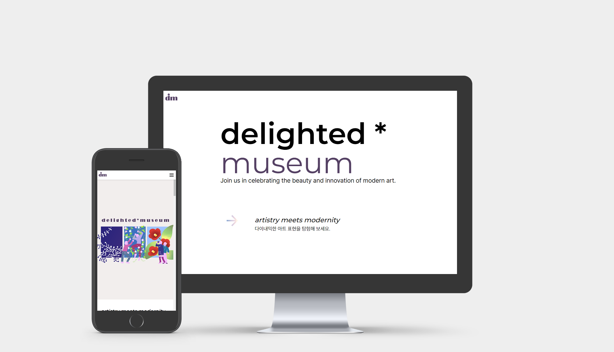

delighted museum

PUBLISHING
00 Overview
홈페이지 제작
재직 중 제작한 작업물을 리파인한 것입니다. 5인 이하 규모의 스타트업에서 일하며 CI작업부터 UI디자인까지 다양한 디자인적 업무를 경험했는데, 이 사이트를 제작하면서 처음으로 직접 디자인&퍼블리싱한 홈페이지가 실제로 사용되는 경험을 할 수 있었습니다.
01 Site Information
Responsive
PC 1440px / Mobile 375px
Javascript / JSON
02 Design
Concept
미래적인 느낌을 표현함과 동시에 남들과는 조금 다른 선택을 하는 예술적인 이미지를 담기 위해 국내 웹사이트에서 주로 사용되는 상단 레이아웃 대신 사이드 토글을 이용한 메뉴바를 사용해 심플함과 스마트함을 강조했습니다. 모바일 기기에서도 유연하게 대응 가능하도록 반응형 웹사이트로 제작했습니다.
Keyword
CLEAN
SMART
FUTURE
Color
#FFF
#554164
#86A4D1
#F5E1E1
Typography
KOR
pretendard
ENG
Montserrat